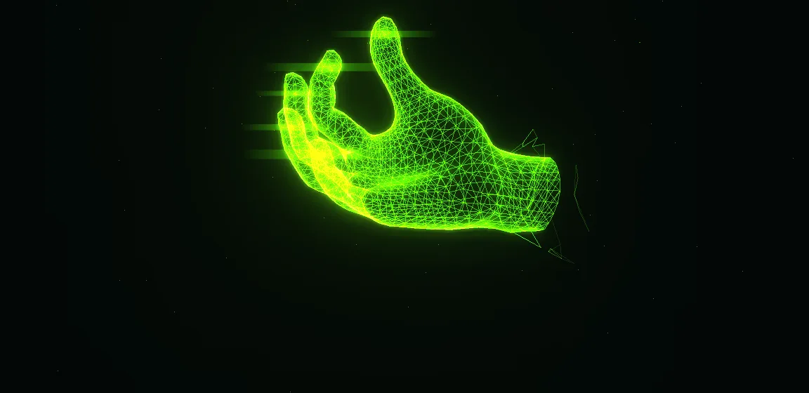

סימולציות אינטראקטיביות
לחוש את המשוואות בידיים
מעבדות וירטואליות שבניתי בעזרת בינה מלאכותית, כדי ללמוד לבד נושאים מסובכים. כל סימולציה מתחילה בהסבר קצר, ממשיכה למעבדה שאפשר לשחק בה, ומסתיימת בניסויים מודרכים.

לא נמצאו סימולציות שמתאימות לחיפוש.